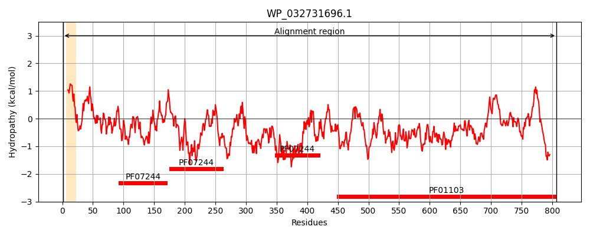
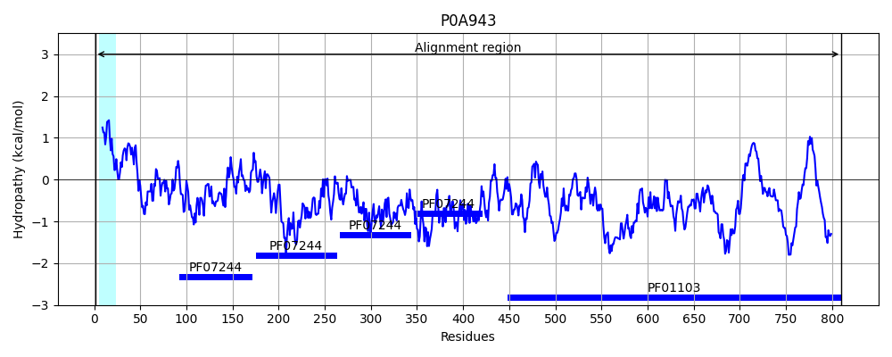
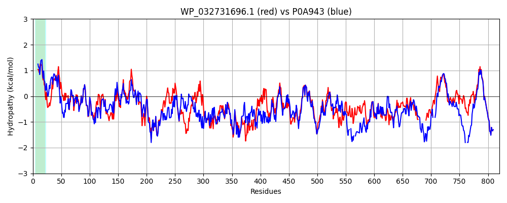

Hit Accession: P0A943
Hit TCID: 1.B.33.1.3
Hit Description: gnl|BL_ORD_ID|8629 gnl|TC-DB|P0A943|1.B.33.1.3 Protein yaeT precursor - Shigella flexneri.
Mach Len: 820
e:0.000000
Query TMS Count : 1
Hit TMS Count: 1
TMS-Overlap Score: 0.900000
Predicted Substrates:CHEBI:8526;protein polypeptide chain
BLAST Alignment:
Score: 2669 , Bit scores: 1032 bits, E-value: 0.0e+00, Alignment length: 820, Percentage identity: 61
Query: 1 MLKKTHIISGLLIAPLTLYAATSYQVDDIRFEGLQRVTVGAALLSMPLHAGDAVTPEDVSEAVRALYASGNFENVQILRDGKTLVVQVKERPTIASVSFSGNKSVKDDALKENLTASGISAGSALDRNSLSEIEKGLQDFYYSAGKYSAQVHAVVTPLPRNRVDLTFVFQEGISAKIAQINIIGNQAFREETLLDQLQLRDNVPWWNVVADKKYQKQKLEADLETLRSFYLDRGYARFAIESTLVSMTPDKKSLYITIALNEGERYRVDRTQVTGDLAQHGPEIEALAQPLAGAWYSGAQVTTVENEIKKRFGKYGYAWPQVTTTPEIDDAHHRVALHIQVNAGRRYSVRQIRFSGNDTSRDAVLRREMRQMEGAWLNNEKVEQGKVRLDRTGFFENVEQQIVPVSGTADQVDVVYKVKERNTGSFNVGLGFGTDSGVSYQLGVTQDNWLGTGNSVSFNGTRNSYQSYLELGATNPWFTVDGISLGGKIFYNSYDASDADAGSYNQQSYGLGSTLGFPISENNSLNLGLDYVHNRLTNMDPELTTWRYLSSRGIEPSVVTKDGDSGAKYSANDYFVSLGWGYNDLDRGFFPRAGNKSSLSGKVTLPGSDNSYYKLSFDTAQYLPLSENKRWVWMERLRAGYAGGLDGKSVPFYDNFYAGGSSSVRGFSSNTIGPKAAY-------------YRCNGSESSYSACPLDASSDAVGGNAMAVLNSEFIIPTPFVNDKYADSLRTSLFVDAGTVWSTSWQNTAQTLAAGIPDYGDPGHIRLSAGIAVQWMSPLGPLVFSWAEPFKKYDGDKAEQFQFNIGKTW 807
M K +I+ LL + T+Y A + V DI FEGLQRV VGAALLSMP+ GD V ED+S +RAL+A+GNFE+V++LRDG TL+VQVKERPTIAS++FSGNKSVKDD LK+NL ASG+ G +LDR ++++IEKGL+DFYYS GKYSA V AVVTPLPRNRVDL VFQEG+SA+I QINI+GN AF + L+ QLRD VPWWNVV D+KYQKQKL DLETLRS+YLDRGYARF I+ST VS+TPDKK +Y+T+ + EG++Y++ +V+G+LA H EIE L + G Y+G +VT +E++IKK G+YGYA+P+V + PEI+DA V L + V+AG R+ VR+IRF GNDTS+DAVLRREMRQMEGAWL ++ V+QGK RL+R GFFE V+ V G+ DQVDVVYKVKERNTGSFN G+G+GT+SGVS+Q GV QDNWLGTG +V NGT+N YQ+Y EL TNP+FTVDG+SLGG++FYN + A DAD Y +SYG TLGFPI+E NSL GL YVHN L+NM P++ WRYL S G PS T D D+ + +D+ + GW YN LDRG+FP G++ +L+GKVT+PGSDN YYK++ DTA Y+P+ ++ +WV + R R GY GL GK +PFY+NFYAGGSS+VRGF SNTIGPKA Y Y C + + C S DAVGGNAMAV + EFI PTPF++DKYA+S+RTS F D GTVW T+W ++ +G PDY DP +IR+SAGIA+QWMSPLGPLVFS+A+PFKKYDGDKAEQFQFNIGKTW
Sbjct: 1 MAMKKLLIASLLFSSATVYGAEGFVVKDIHFEGLQRVAVGAALLSMPVRTGDTVNDEDISNTIRALFATGNFEDVRVLRDGDTLLVQVKERPTIASITFSGNKSVKDDMLKQNLEASGVRVGESLDRTTIADIEKGLEDFYYSVGKYSASVKAVVTPLPRNRVDLKLVFQEGVSAEIQQINIVGNHAFTTDELISHFQLRDEVPWWNVVGDRKYQKQKLAGDLETLRSYYLDRGYARFNIDSTQVSLTPDKKGIYVTVNITEGDQYKLSGVEVSGNLAGHSAEIEQLTKIEPGELYNGTKVTKMEDDIKKLLGRYGYAYPRVQSMPEINDADKTVKLRVNVDAGNRFYVRKIRFEGNDTSKDAVLRREMRQMEGAWLGSDLVDQGKERLNRLGFFETVDTDTQRVPGSPDQVDVVYKVKERNTGSFNFGIGYGTESGVSFQAGVQQDNWLGTGYAVGINGTKNDYQTYAELSVTNPYFTVDGVSLGGRLFYNDFQADDADLSDYTNKSYGTDVTLGFPINEYNSLRAGLGYVHNSLSNMQPQVAMWRYLYSMGEHPS--TSDQDN--SFKTDDFTFNYGWTYNKLDRGYFPTDGSRVNLTGKVTIPGSDNEYYKVTLDTATYVPIDDDHKWVVLGRTRWGYGDGLGGKEMPFYENFYAGGSSTVRGFQSNTIGPKAVYFPHQASNYDPDYDYECATQDGAKDLC---KSDDAVGGNAMAVASLEFITPTPFISDKYANSVRTSFFWDMGTVWDTNWDSSQY---SGYPDYSDPSNIRMSAGIALQWMSPLGPLVFSYAQPFKKYDGDKAEQFQFNIGKTW 810 | Protein Hydropathy Plots: |
|---|
|  |  |
Pairwise Alignment-Hydropathy Plot:
|
|---|
|  |